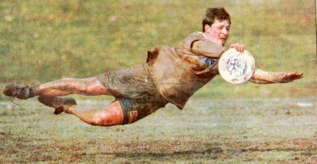

mmctamma@vt.edu

(a fine picture of me laying out at Bucknell University;
my compliments to The Daily Item)
Address:
Department of Biology
Virginia Polytechnic Institute
& State University
Blacksburg, VA 24061-0406
E-mail:
mmctamma@vt.edu
 Click
on the little guy to send me e-mail.
Click
on the little guy to send me e-mail.
Phone:
(540) 231-6679
Fax:
(540) 231-9307
Research interests:
-Stream ecosystem structure
and function in response to landscape and watershed properties
-Land use trends of western
North Carolina watersheds
-Emphasis on physicochemistry,
macroinvertebrates, and stream metabolism
-Passive recovery, active restoration,
and preservation of stream ecosystems
Educational Background:
Ph.D. in Biology, expected 2002, Virginia
Polytechnic Institute and State University
M.S. in Biology, 1998, Virginia Polytechnic
Institute and State University
B.S. in Biology, 1995, Bucknell University
For more professional information about myself:
Curriculum
Vitae
Abstract
of Master's Degree Research
For my Aquatic Entomology Students:
Link to Aquatic
Entomology Homepage
For more personal information about myself (under
construction):
Family
Photo Album
Other Web Pages Related to Me:
Bucknell
University
Bucknell
Mudsharks Ultimate Frisbee
Virginia
Tech
Ultimate
Frisbee Players Association
North
American Benthological Society
Coweeta
Hydrologic Laboratory